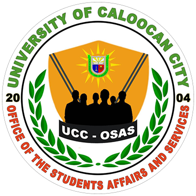

STUDENT SUPPORT
THE OFFICE OF
THE OFFICE OF
STUDENT AFFAIRS
AND SERVICES
To support and empower students’ academic and
extracurricular development by providing maximum
support
student services and a conducive
environment for students.
